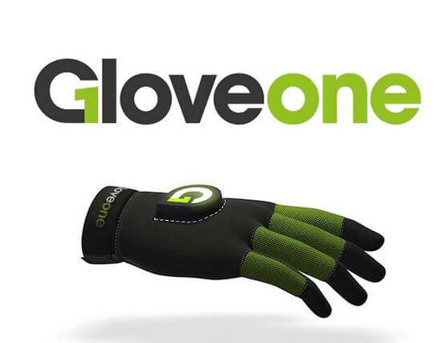

LABSTER
Laboratory Simulations for Educators to Empower their STEM Students
What is LABSTER?
Simulation platform that allow students to perform scientific experiments using a browser or a VR headset.
Benefits
- It allows to perform experiments without the risks.
- Enables universities to save money by not using reactives or disposal methods.
- Has LMS integration (i.e. Blackboard)
- Can be used in computers, smartphones with or without a VR headset.
Weaknesses
- Limited to what programmers set up as the experiment's outcome.
- No haptic feedback.

Conclusion
- It is a great tool to educate students regarding STEM related experiments since allow dynamic interaction without the hazards.
- Can be implemented in current universities’ programs to provide a more comprehensive approach on science as an affordable solution.